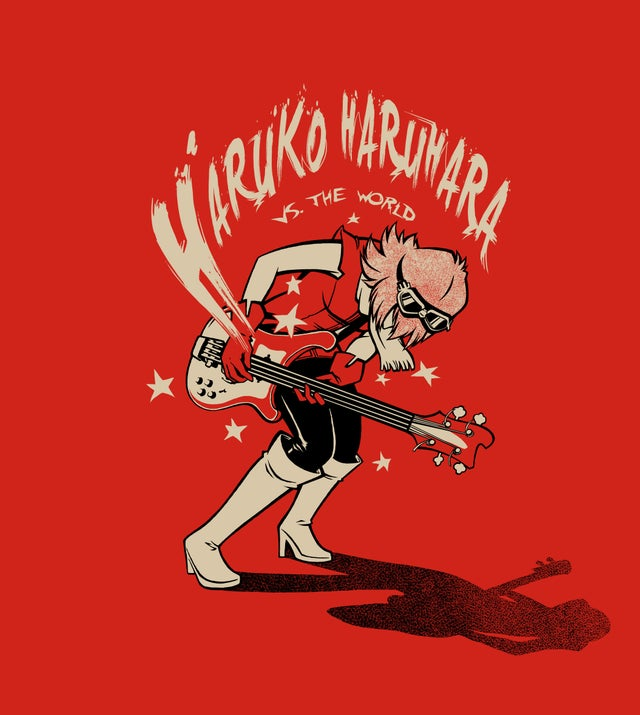

entretenimento ou alienação, divertimento ou ilusão quando a diverção se tornou uma fuga
NIKKI SIX.
Mötley Crüe
a bandaO Mötley Crüe foi formado em 17 de janeiro de 1981 quando o baixista Nikki Sixx saiu da banda London e começou a ensaiar com Tommy Lee e com o vocalista/guitarrista Greg Leon..[5] Lee tinha trabalhado antes com Leon numa banda chamada Suite 19[6] e o trio continuou ensaiando e praticando até que eventualmente, Leon decidiu parar. O baixista e o baterista começaram a procurar por novos membros. Sixx e Lee encontraram um novo guitarrista, Robert "Mick Mars" Deal. Mars foi ouvido e depois foi contratado por Sixx e por Lee. Mars tinha tocado numa banda, White Horse, quando um dos membros da banda denominou o grupo de "a motley looking crew.". Ele se lembrou da frase e depois copiou isso para usar como nome para a banda: Mottley Cru. Falando rapidamente a palavra, fica 'Mötley Crüe', e foi esse o nome escolhido para a banda, também para homenagear a cerveja alemã, que os membros bebiam no momento. Lee conheceu Neil na escola Royal Oak H.S. (Ensino Médio) em Covina e tocaram em duas bandas de garagem. Vendo sua performance na banda Rockandi (pronuncia-se Rock-Candy), Neil fez um ansioso teste e foi aceito por Lee. O primeiro álbum deles era uma produção independente chamada Too Fast For Love, que foi produzida pela Lethur Records. Logo em seguida eles assinam um contrato com a Elektra Records, que remixou o álbum e a banda partiu em turnê. Em 1983 lançam o álbum Shout at the Devil, que apresenta hits como "Looks That Kill", "Ten Seconds To Love" e "Too Young To Fall In Love".
